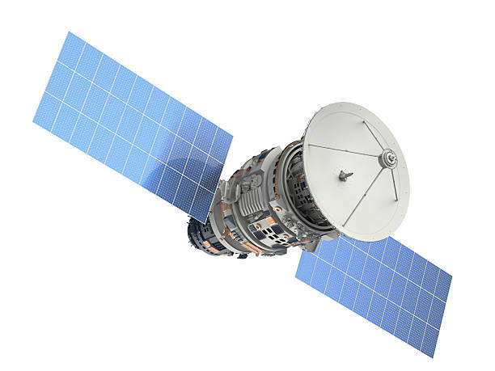

Satellite plays an important role in our day-to-day life. Initially, they were used as a secret device for espionage and other undercover military activities. With more and more commercialization, they got into digital communication areas impacting our daily lives. There are many business models built tapping the potential offered by satellite services.
In the Solar system, there are Sun, Planets, moons (Natural satellites). Sun is one of the stars in billions of stars in the Milky Way Galaxy. Milky Way is one among the billions of Galaxies in the universe. Any object that orbits around another bigger object in space is called Satellite. This orbit may be circular or elliptical in the path. The bigger object holds all the small objects revolving around it and provides life, light, heat, and energy to them.
Planets like Earth, Jupiter, Uranus, Saturn, Neptune and Mars orbiting around Sun and they are called Natural Satellites. Sun holds the entire solar system; it takes up the central key position and provides all the resources to the planets. Moons like Titan, Ganymede, Callisto, Rhea, Miranda and the Moon orbiting Planets are also part of this natural satellite category. There are around 240 such moons in the solar system orbiting Planets, Dwarf Planets, and other solar system bodies.
These satellites are built and placed in space, orbiting Earth or other Planets with specific intentions. An international space station is one such habitable Satellite placed in space, and it was built by five participating space agencies such as NASA (USA), JAXA (Japan), ESA (Europe), Roscosmos (Russia) and CSA (Canada) between 1998-2011 and this space station was visited by 230 Astronauts from 18 countries. This space station provides an environment for conducting space research and testing new missions to the moon and mars.